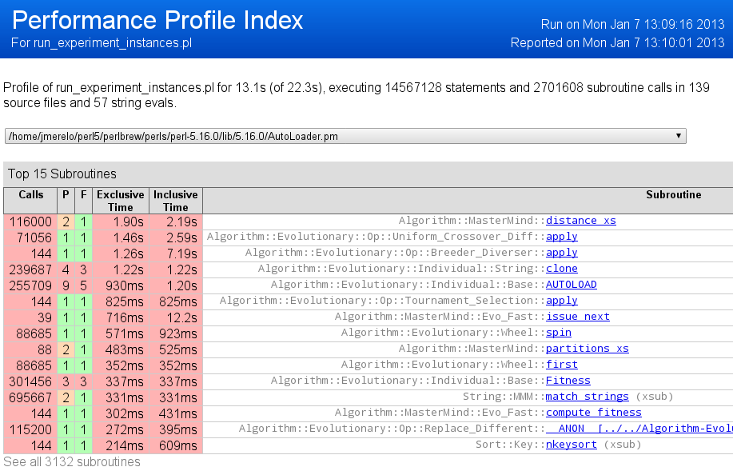

Improving Evolutionary Solutions to the Game of MasterMind Using an Entropy-based Scoring Method
JJ Merelo, Pedro Castillo, Antonio Mora , Anna Esparcia
GeNeura, U. Granada, S2 Grupo

Let's play MasterMind
Create a combination
Make a guess
Get a response
Keep playing until solution is found
How do we solve this problem?
Using a crowd optimization algorithm?
Using a cow herd algorithm?
Using a sheep flock algorithm?
No! We use an evolutionary algorithm!
Play consistently
Make the algorithm faster using a profiler
Wait! What's a profiler?
This is profiling for fun and profit
What else do we do in this paper?

- Test population and consistent set size
- Try faster mutation operators
- Establish a new state of the art in number of moves needed to solve the game of Mastermind
Image from JackAZ Photo
Permutation is slow! What do we do?
- Try a faster permutation
- Use two operators: swap and shift
Image by CurveTo.